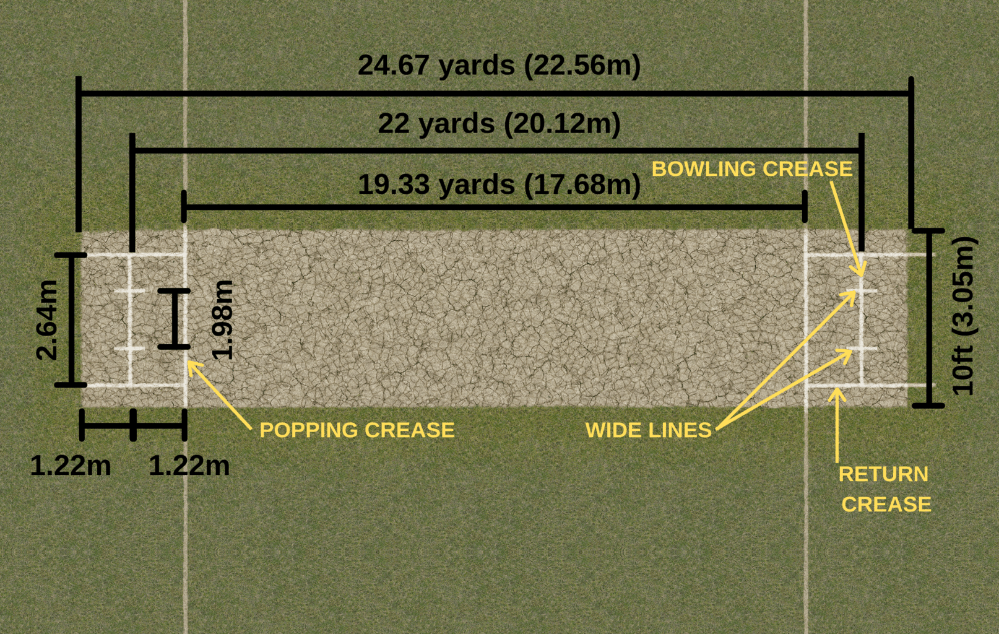
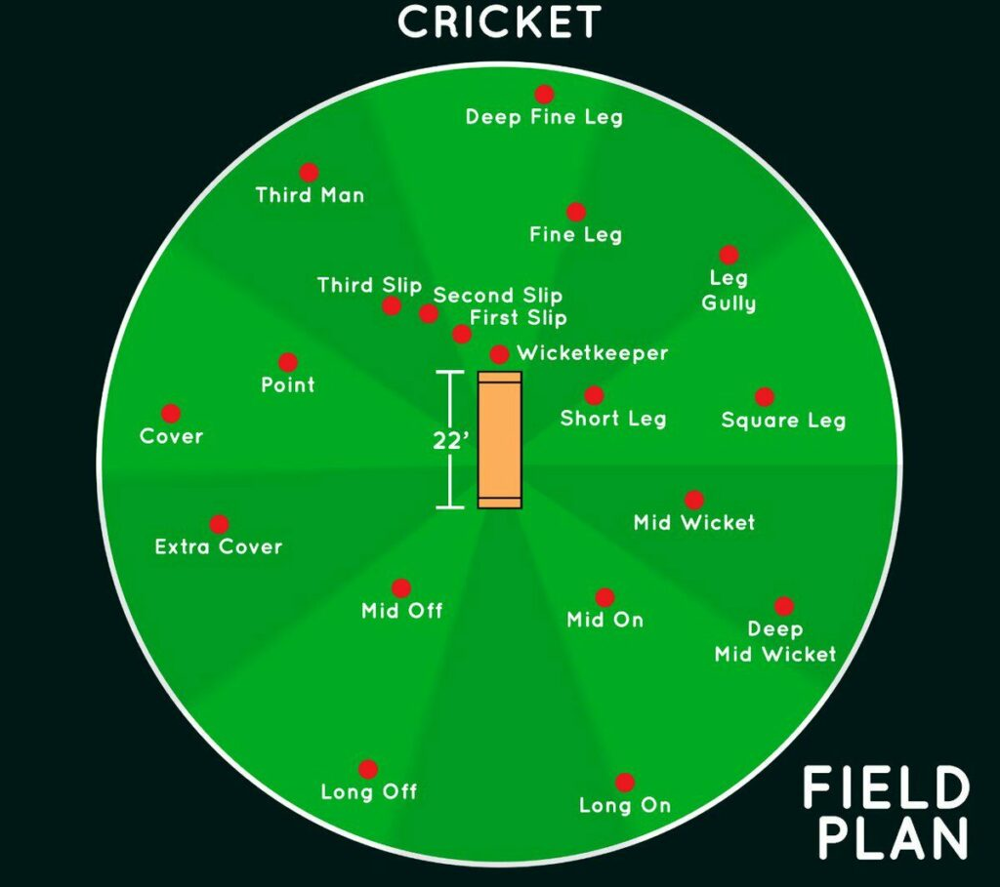
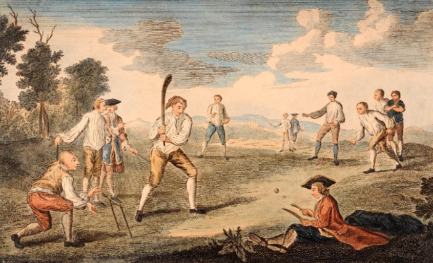
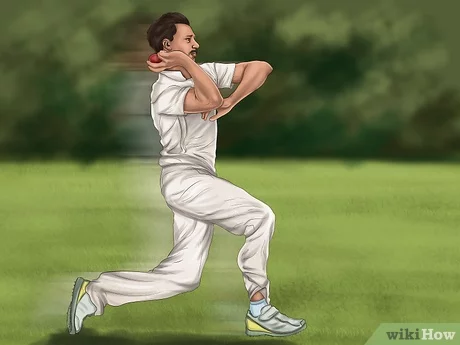
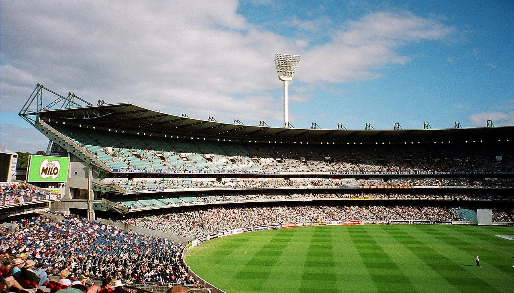
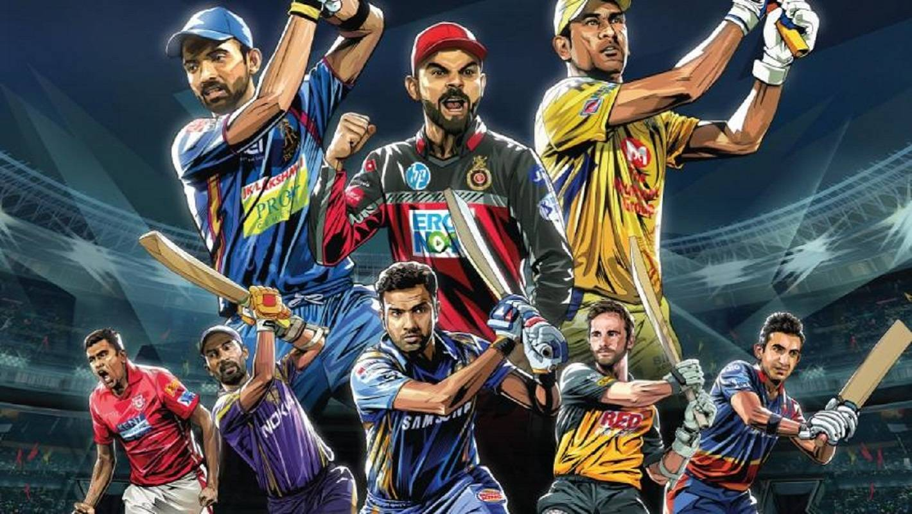
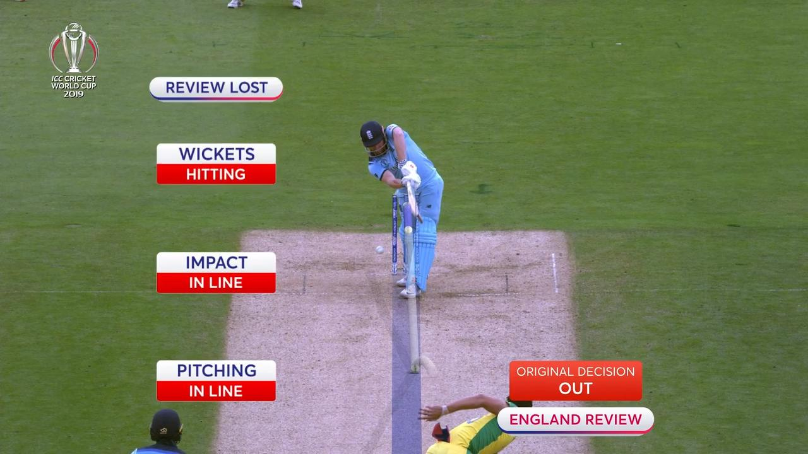
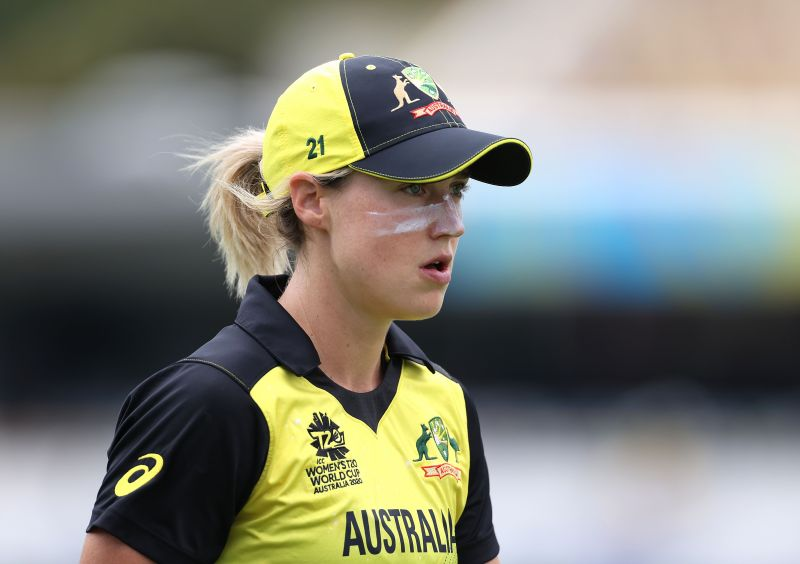

Cricket is played with a bat and ball and involves two competing sides (teams) of 11 players. The field is oval with a rectangular area
in the middle, known as the pitch, that is 22 yards (20.12 metres) by 10 feet (3.04 metres) wide. Two sets of three sticks, called wickets,
are set in the ground at each end of the pitch. Across the top of each wicket lie horizontal pieces called bails. The sides take turns at
batting and bowling (pitching); each turn is called an “innings” (always plural). Sides have one or two innings each, depending on the
prearranged duration of the match, the object being to score the most runs. The bowlers, delivering the ball with a straight arm, try to
break (hit) the wicket with the ball so that the bails fall. This is one of several ways that the batsman is dismissed, or put out. A bowler
delivers six balls at one wicket (thus completing an “over”), then a different player from his side bowls six balls to the opposite wicket.
The batting side defends its wicket.

There are two batsman up at a time, and the batsman being bowled to (the striker) tries to hit the ball away from the wicket. A hit may be
defensive or offensive. A defensive hit may protect the wicket but leave the batsmen no time to run to the opposite wicket. In that case the
batsmen need not run, and play will resume with another bowl. If the batsman can make an offensive hit, he and the second batsman (the nonstriker)
at the other wicket change places. Each time both batsmen can reach the opposite wicket, one run is scored. Providing they have enough time without
being caught out and dismissed, the batsmen may continue to cross back and forth between the wickets, earning an additional run for each time both
reach the opposite side. There is an outside boundary around the cricket field. A ball hit to or beyond the boundary scores four points if it hits
the ground and then reaches the boundary, six points if it reaches the boundary from the air (a fly ball). The team with the highest number of runs
wins a match. Should both teams be unable to complete their number of innings before the time allotted, the match is declared a draw. Scores in the
hundreds are common in cricket.
Cricket is believed to have begun possibly as early as the 13th century as a game in which country boys bowled at a tree stump or at the hurdle gate
into a sheep pen. This gate consisted of two uprights and a crossbar resting on the slotted tops; the crossbar was called a bail and the entire gate
a wicket. The fact that the bail could be dislodged when the wicket was struck made this preferable to the stump, which name was later applied to the
hurdle uprights. Early manuscripts differ about the size of the wicket, which acquired a third stump in the 1770s, but by 1706 the pitch (the area
between the wickets) was 22 yards long.

The ball, once presumably a stone, has remained much the same since the 17th century. Its modern weight of between 5.5 and 5.75 ounces (156 and 163 grams)
was established in 1774. The primitive bat was no doubt a shaped branch of a tree, resembling a modern hockey stick but considerably longer and heavier.
The change to a straight bat was made to defend against length bowling, which had evolved with cricketers in Hambledon, a small village in southern England.
The bat was shortened in the handle and straightened and broadened in the blade, which led to forward play, driving, and cutting. As bowling technique was
not very advanced during this period, batting dominated bowling through the 18th century.

Until early in the 19th century all bowling was underhand, and most bowlers favoured the high-tossed lob. Next came “the round-arm revolution,” in
which many bowlers began raising the point at which they released the ball. Controversy raged furiously, and in 1835 the MCC rephrased the law to
allow the hand to be raised as high as the shoulder. The new style led to a great increase in pace, or bowling speed. Gradually bowlers raised the
hand higher and higher in defiance of the law. Matters were brought to a head in 1862 when an England team playing against Surrey left the field at
London’s Kennington Oval in protest over a “no ball” call (i.e., an umpire’s decision that the bowler has thrown an illegal pitch). The argument
centred on whether the bowler should be allowed to raise his arm above the shoulder. As a result of this controversy, the bowler was in 1864 officially
accorded liberty to bowl overhand (but not to cock and straighten the arm). This change dramatically altered the game, making it yet more difficult
for a batsman to judge the ball. Already a bowler was allowed to take a running start from any direction and for any distance. Once the bowler was
allowed to release overhand, the ball could then reach speeds above 90 mph (145 km/hr). Though this is not as fast as the pitching speed in baseball,
cricket has an additional twist in that the ball is usually delivered so as to bounce on the pitch (field) before the batsman can hit it. Thus, the
ball may curve to the right or the left, bounce low or high, or spin toward or away from the batsman.
Batsmen learned to protect themselves with pads and batting gloves, and a cane handle increased the resilience of the bat. Only the best batsmen,
however, could cope with fast bowling, because the poor condition of most pitches made it yet more difficult for a batsman to predict the motion of
the ball. As the grounds improved, however, batsmen grew accustomed to the new bowling style and went on the offensive. Other new bowling styles were
also discovered, causing batsmen to adjust their technique further.
In the early 20th century so many runs were being scored that debate ensued on reforming the “leg-before-wicket” law, which had been introduced in the
1774 laws to prohibit a batsman from using his body to prevent the ball from hitting his wicket. But the heavy scores were actually due to the performances
of several outstanding batsmen, such as W.G. Grace, Sir John Berry Hobbs, and K.S. Ranjitsinhji (later the maharaja of Nawanagar). This was cricket’s golden
age.
 International cricket in the early part of the 20th century was dominated by the original members of the Imperial Cricket Conference, England, Australia, and South Africa. Later renamed the International Cricket Conference and then the International Cricket Council, the ICC gradually took over more responsibility for the administration of the game and shifted its power base from west to east. When in 2005 the ICC moved its offices from Lord’s in London-home of the MCC, the game’s original rulers and still its lawmakers-to Dubai, the shift away from the old ways of governance was complete. The priorities of the game changed too. By the turn of the 21st century, only Australia and England still played Test cricket to full houses. Everywhere else, and particularly in India and Pakistan, crowds flocked to see limited-overs internationals. Test cricket became almost an afterthought. Although the power to change the laws of the game have remained with the MCC, the ICC developed its own Code of Conduct for players, officials, and administrators, which sets out disciplinary procedures and protects the spirit of the game. It also organized major international tournaments, including the one-day and Twenty20 World Cups and the Champions Trophy. In 2000 the ICC set up the Anti-Corruption Unit (renamed the Anti-Corruption Unit and Security Unit in 2003) to combat the growing threat of illegal gambling and match fixing. At the beginning of the 2010s, the ICC had 10 full members and dozens of associate and affiliate members.

The advent of Twenty20 cricket (T20) and the wild success of the IPL in the first decade of the 21st century led to a period of great innovation in the game. The new,
truncated form of the game privileged batting, partly by restricting the placement of fielders and shortening the boundaries. To counter free-scoring batsmen with heavy
bats, bowlers began to perfect a great variety of different balls (deliveries). Disguise became an essential part of the bowler’s armoury. Slow spin-bowling, which forces
the batsman to generate “pace” (that is, to provide the bulk of the power to propel the batted ball, whereas fast bowling contributes more force to the batsman’s swing),
proved a surprisingly effective weapon. Among the new shots that became commonplace for batsmen in T20 cricket was the reverse sweep, wherein a right-handed batsman,
in mid-delivery, changes hands to swing at the ball like a left-hander (or a left-hander swings like a right-hander). Batters also began employing the scoop, a shot played
almost vertically over the wicketkeeper’s head. Test cricket also benefited from these new techniques and from the new era of creativity, not least from the introduction of
the doosra, a delivery disguised to look like an off-spinner that actually turns away from the right-handed batsman like a leg-spinner. Developed by the Pakistan off-spinner
Saqlain Mushtaq and taking its name from the Urdu expression meaning “the other one,” the ball was perfected by Muttiah Muralitharan of Sri Lanka.

Cricket also followed other sports in its use of video technology in making onfield decisions. Initially, from its first trial in 1992, only line decisions such
as run outs were decided by referral to a third umpire off the field. But in 2008 a new referral system, in which players were allowed to refer any onfield decision
to the third umpire, made its international debut in a series between India and Sri Lanka (it had been put on trial in English county cricket in 2007). Each side
receives two referrals every innings (down from three when the system was first tried out). Referrals that result in the umpire changing an original decision are
not counted against this total. The system was designed to eradicate an umpire’s innocent but obvious mistake and has been greeted with more enthusiasm by players
than umpires.

Women first played cricket in England in the 18th century. In 1887 the first club, White Heather, was formed, and it survived to 1957. In 1890 two professional teams
known collectively as the Original English Lady Cricketers were in action.
In 1926 the Women’s Cricket Association was founded, and in 1934–35 it sent a team to Australia and New Zealand. Australia paid a return visit in 1937, and, since
World War II, tours have increased. The International Women’s Cricket Council was formed in 1958 by Australia, England, the Netherlands, New Zealand, and South Africa
and later included India, Denmark, and several West Indian islands. A World Cup was instituted in 1973, two years ahead of men’s cricket, and England and Australia played
in the first women’s matches at Lord’s in 1976. Since 1973, women's One Day Internationals (ODIs) have also been contested, and these quickly became the focus of women's
international cricket. In the years since the inception of women's ODIs more than eight times more of this format has been played than women's Test cricket. The Women's
Cricket World Cup has been held nine times, with Australia, England and New Zealand sharing the titles. In 2004, a shorter format still was introduced, with the introduction
of women's Twenty20 International. Initially, women's Twenty20 cricket was played little at international level, with only four matches played by the end of 2006. However,
the following three years saw a rapid growth, with six matches been played in 2007, ten in 2008 and thirty in 2009, which also saw the first ICC Women's World Twenty20.
***